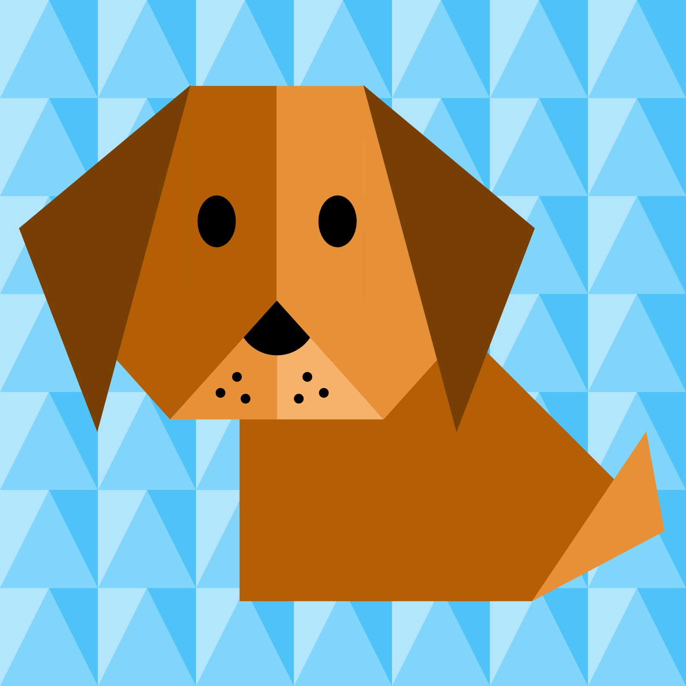

Origami Instructions and Diagrams
Step by Step diagrams are probably the most popular and easiest to follow way to show how to show how to fold things out of paper.
Trying to find good origami instructions on the internet can be a lot of work though. To help your search we've put
together the largest database of free origami diagrams anywhere on the internet.

camel
-
interesting facts about a camel!
- camel's ears are furry
- camels can move easily across sand because of its deligned feet
- when they find water , they will drink it as much times as possible

panda
interesting facts about pandas!
-
they have great camouflage for their environment
- their eyes are different to normal bears
- bamboo is critical to their diet

chameleon
interesting facts about chameleons
- chameleons are reptiles that are part of the iguana suborder
- changing skin color is an importnat part of communication among chameleons
- most chameleons have a prehensive tail that they use to wrap around tree branches

pigeon
interesting facts about pigeons
- Pigeons are incredibly complex and intelligent animals.
- Pigeons are renowned for their outstanding navigational abilities.
- Pigeons are highly sociable animals.

cicada
interesting facts about cicadas
- Cicadas can survive a huge fall as babies, or nymphs.
- Females may be attracted to the sound of motors.
- The loud whirring or buzzing sound you hear is an all-male cicada chorus.

teddy bears
interesting facts about teddy bears
- Bears are extraordinarily intelligent animals.
- Bears have excellent senses of smell, sight and hearing.
- During the late summer and into the fall, bears enter a period of excessive eating called hyperphagia.

frog
interesting facts about frogs
- There is evidence that frogs have roamed the Earth for more than 200 million years, at least as long as the dinosaurs.
- The world's largest frog is the goliath frog of West Africa—it can grow to 15 inches and weigh up to 7 pounds.
- One of the smallest is the Cuban tree toad, which grows to half an inch long.

dog
interesting facts about dogs
- Their sense of smell is at least 40x better than ours.
- Some have such good noses they can sniff out medical problems.
- Some dogs are incredible swimmers.